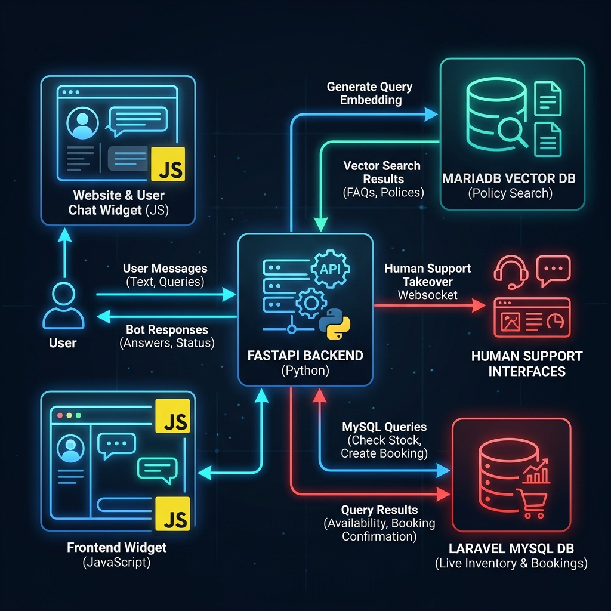

Loads page. If not logged in, interacts as Guest. If logged in, member session token is verified.
Handles UI layout. Connects via WebSocket. Initiates guest merge if user logs in mid-session.
Coordinates WebSocket connections, routes user queries to LLM agent, checks timeout events.
Decides to query inventories, databases, or RAG vectors based on semantic query analysis.
